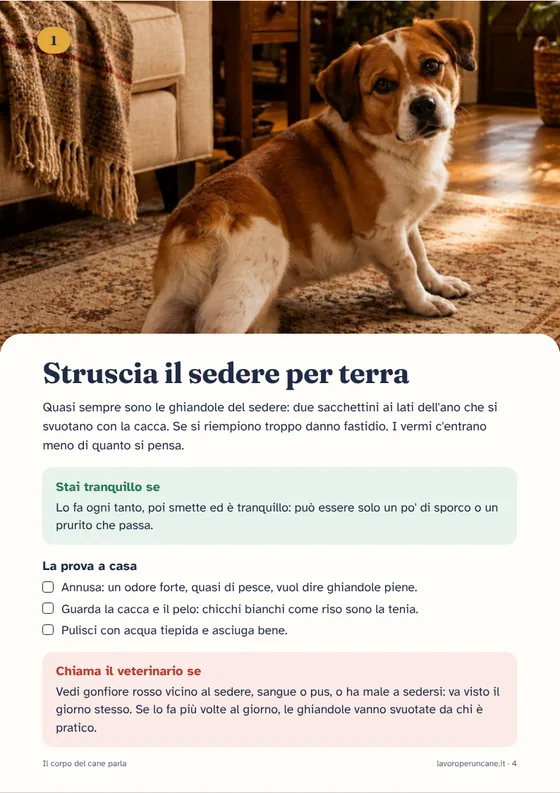
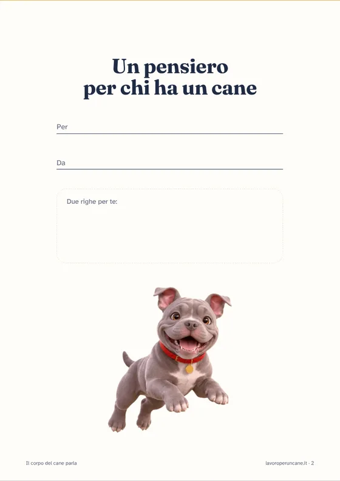

Lavoro per un cane
Lavoro per un cane
Il corpo del cane parla
La guida dei 14 segnali che ci fanno preoccupare. Per ognuno: cosa vuol dire, la prova da fare a casa e quando chiamare il veterinario. 18 pagine a colori, da tenere sul telefono o da stampare.



3,90 €
PDF di 18 pagine. Lo scarichi subito dopo il pagamento.
Compra la guida Pagamento sicuro con Stripe.Cosa c'è dentro
- Struscia il sedere per terra
- Trema anche in casa
- Trema mentre dorme
- Beve tantissimo
- Ha mangiato un osso di pollo
- Ha il singhiozzo
- Ha il naso caldo
- Ha l'alito cattivo
- Ha un occhio rosso
- Tossisce
- Mangia l'erba
- Si lecca le zampe
- Respira veloce
- Zoppica all'improvviso
Ogni pagina ha la foto del segnale e tre riquadri:
Stai tranquillo se: quando di solito passa da solo.
La prova a casa: cose semplici da guardare o da fare subito, con le caselle da spuntare.
Chiama il veterinario se: quando non aspettare.
In fondo trovi un riquadro per scrivere il numero del tuo veterinario e quello delle emergenze di notte, da attaccare al frigo.
Un regalo di Natale per chi ha un cane
La seconda pagina è una dedica: Per…, Da… e due righe da scrivere a mano. Stampala, piegala e mettila sotto l'albero, oppure mandala su WhatsApp a chi ha appena preso un cucciolo. Costa meno di un caffè e un biscotto.
Detto chiaro: questa guida aiuta a capire, non fa diagnosi e non sostituisce il veterinario. Nel dubbio, chiamalo. Ogni pagina riassume quello che scrivono veterinari e studi; le fonti sono sul sito, alla pagina di ogni segnale (per esempio il cane tossisce o il cane zoppica).
Domande
Come la ricevo?Dopo il pagamento si apre la pagina per scaricare il PDF. Salvalo sul telefono o sul computer.
Posso stamparla?Sì, è in formato A4 e si stampa bene anche a casa.
Posso regalarla?Certo. Stampala o mandala a chi vuoi.
Il sito resta gratis?Sì. Tutte le schede restano gratis per tutti. La guida è un modo per aiutare Bruno a tenerlo online.